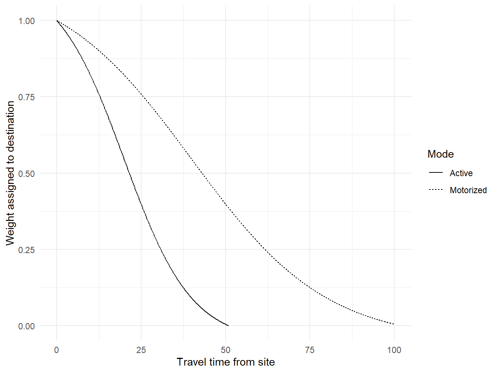

Chapter 4 Methodology
4.0.1 Variables
4.0.1.1 Categories that would be useful (things to predict?)
Owner-occupied? Investor-owned? Vacant? Demolition in the past year (no construction since) Construction in the past year
4.0.1.2 factor analysis Variables
The variables made it into the initial factor analysis were:
Accessibility
- Distance to transit (use number of transit stops within 1/2 mile walkshed)
- Share of old/new homes (use average age of homes within 1/2 mile walkshed)
- Transit frequency (use transit stops per hour within 1/2 mile walkshed)
Affordability
- Average Condition of homes in half-mile walkshed
- Median rent of block-groups with centroids within 1/2 mile walkshed.
- Median income of block groups with centroids within 1/2 mile walkshed.
- Median ownership cost of block groups with centroids within 1/2 mile walkshed.
Close
Diverse buildings
- Entropy of housing types (apartment, townhomes, etc) within 1/2 mile walkshed
Other
- Standard deviation of building age within 1/2 mile walkshed
4.1 Data
We obtained data on property addresses, land uses, assessed values (for both land and buildings), and building condition from the property assessment data (Allegheny County Office of Property Assessments 2022), which includes information on 582,116 properties in Allegheny County.
We also obtained latitude and longitude coordinates for each property from a geocoder file provided by Western Pennsylvania Regional Data Center (2021). Over 99.5 percent of properties included in the assessment dataset are included in the geocoder file. Properties without geocoded locations are excluded from our analysis, leaving a total of 579,473 properties.
Potential development sites were identified as those
- classified as “residential” (indicating residential properties with one to four housing units) or “commercial” (which includes mixed-use developments and residential properties with more than four housing units) and
- with a land use description in one of 59 possible categories. The most common of these are listed Table 4.11. One site (3008 Phillip Dr in Clairton) is missing a land use description in the assessment data. We checked this address on Zillow to determine that this is a single-family home and classified it as such in our data.
| USEDESC | Number of potential sites | Percent of potential sites | Cumulative percent of potential sites |
|---|---|---|---|
| SINGLE FAMILY | 371,064 | 69.8 | 69.8 |
| VACANT LAND | 63,603 | 12.0 | 81.7 |
| TWO FAMILY | 17,330 | 3.3 | 85.0 |
| CONDOMINIUM | 16,683 | 3.1 | 88.1 |
| TOWNHOUSE | 14,953 | 2.8 | 90.9 |
| ROWHOUSE | 11,129 | 2.1 | 93.0 |
| VACANT COMMERCIAL LAND | 6,103 | 1.1 | 94.2 |
| THREE FAMILY | 3,977 | 0.7 | 94.9 |
| RES AUX BUILDING (NO HOUSE) | 3,635 | 0.7 | 95.6 |
| RETL/APT’S OVER | 3,366 | 0.6 | 96.2 |
| COMM AUX BUILDING | 3,040 | 0.6 | 96.8 |
| APART: 5-19 UNITS | 2,800 | 0.5 | 97.3 |
| MOBILE HOME (IN PARK) | 2,563 | 0.5 | 97.8 |
| FOUR FAMILY | 2,064 | 0.4 | 98.2 |
| BUILDERS LOT | 1,714 | 0.3 | 98.5 |
| CONDOMINIUM COMMON PROPERTY | 1,307 | 0.2 | 98.8 |
| PARKING GARAGE/LOTS | 935 | 0.2 | 99.0 |
| OFFICE/APARTMENTS OVER | 860 | 0.2 | 99.1 |
| MOBILE HOME | 676 | 0.1 | 99.2 |
| APART:40+ UNITS | 545 | 0.1 | 99.3 |
The above criteria yield 531,811 potential sites. Potential building sites were further filtered to exclude those with missing data on the most recent sale (6,574 sites, or about one percent of all sites).2 for a total of 526,237 potential sites.
The focus of this analysis is on potential development sites rather than on properties. Some properties in the assessor dataset are condominums where multiple properties share a single parcel of land. We aggregated these to the site level by identifying all properties with an assessed building value greater than zero, a land value of zero, and a land use description that did not indicate the land was vacant. If multiple such properties share an address, we classified all properties at that address as a condominium and aggregated them to the parcel level. This led to a final sample of 518,316 sites.
4.1.1 Aspatial data
Three variables (total assessed fair market value, assessed fair market value of the building, and lot area) were taken directly from the assessment data for use in our analysis. We calculated two additional variables from the assessment data: the inflation-adjusted sales price and the average number of years between sales. The average of:
- The number of years between the most recent sale and the publication data of the assessment data (May 1, 2022);
- The number of years between the most recent sale and the second-most recent sale3; and
- The number of years between the second-most recent sale and the third-most recent sale, if a third-most recent sale is listed.
To aggregate properties identified as condominiums to the site level, we summed the total values for lot area, assessed land value, assessed building value, and inflation-adjusted sale price and averaged values for the average number of years between sales.
write_csv(sites,
here("data",
"sites.csv"))4.1.2 Accessibilty data
Accessibilty was calculated from each of the 518,316 sites in our sample to each of several location types described below.
We used land use codes from the county assessor parcel data to identify destination parcels that residents might value access to. The most common land use codes of identified destination parcels are listed in 4.2.
| USEDESC | Number of identified destinations | Percent of identified destinations | Cumulative percent of identified destinations |
|---|---|---|---|
| MUNICIPAL GOVERNMENT | 10,378 | 29.88 | 29.88 |
| CHURCHES, PUBLIC WORSHIP | 1,948 | 5.61 | 35.49 |
| COMMERCIAL GARAGE | 1,735 | 5.00 | 40.49 |
| OFFICE - 1-2 STORIES | 1,649 | 4.75 | 45.23 |
| SMALL DETACHED RET(UNDER 10000) | 1,645 | 4.74 | 49.97 |
| OFFICE/WAREHOUSE | 1,385 | 3.99 | 53.96 |
| COUNTY GOVERNMENT | 1,287 | 3.71 | 57.66 |
| WAREHOUSE | 1,255 | 3.61 | 61.28 |
| OWNED BY BOARD OF EDUCATION | 1,086 | 3.13 | 64.41 |
| TOWNSHIP GOVERNMENT | 853 | 2.46 | 66.86 |
| LIVESTOCK O/T D & P-CAUV | 805 | 2.32 | 69.18 |
| LIGHT MANUFACTURING | 799 | 2.30 | 71.48 |
| PUBLIC PARK | 710 | 2.04 | 73.52 |
| RESTAURANT, CAFET AND/OR BAR | 697 | 2.01 | 75.53 |
| GENERAL FARM | 607 | 1.75 | 77.28 |
| OWNED BY COLLEGE/UNIV/ACADEMY | 458 | 1.32 | 78.60 |
| MEDICAL CLINICS/OFFICES | 445 | 1.28 | 79.88 |
| RETL/OFF OVER | 442 | 1.27 | 81.15 |
| OFFICE-ELEVATOR -3 + STORIES | 413 | 1.19 | 82.34 |
| LODGE HALL/AMUSEMENT PARK | 386 | 1.11 | 83.45 |
| AUTO SALES & SERVICE | 364 | 1.05 | 84.50 |
| RETL/STOR OVER | 344 | 0.99 | 85.49 |
| CEMETERY/MONUMENTS | 340 | 0.98 | 86.47 |
| STATE GOVERNMENT | 331 | 0.95 | 87.42 |
| CONVENIENCE STORE/GAS | 304 | 0.88 | 88.30 |
| BANK | 298 | 0.86 | 89.16 |
| NEIGH SHOP CENTER | 297 | 0.86 | 90.01 |
| BARS | 240 | 0.69 | 90.70 |
| FUNERAL HOMES | 194 | 0.56 | 91.26 |
| DAYCARE/PRIVATE SCHOOL | 191 | 0.55 | 91.81 |
| MINI WAREHOUSE | 182 | 0.52 | 92.34 |
| MEDIUM MANUFACTURING | 172 | 0.50 | 92.83 |
| NURSING HOME/PRIVATE HOS | 171 | 0.49 | 93.32 |
| DRIVE IN REST OR FOOD SERVICE | 170 | 0.49 | 93.81 |
| OFFICE-WALKUP -3 + STORIES | 164 | 0.47 | 94.28 |
| AUTO SERV STATION | 137 | 0.39 | 94.68 |
| COMMUNITY SHOPPING CENTER | 137 | 0.39 | 95.07 |
| OTHER RETAIL STRUCTURES | 135 | 0.39 | 95.46 |
| WAREHOUSE/MULTI-TENANT | 126 | 0.36 | 95.82 |
| BOWLING ALLEYS/REC FACILITY | 120 | 0.35 | 96.17 |
| HOTELS | 113 | 0.33 | 96.50 |
| DISCOUNT STORE | 110 | 0.32 | 96.81 |
| CAR WASH | 103 | 0.30 | 97.11 |
| FAST FOOD/DRIVE THRU WINDOW | 85 | 0.24 | 97.35 |
| PHARMACY (CHAIN) | 85 | 0.24 | 97.60 |
| SMALL SHOP | 81 | 0.23 | 97.83 |
| SUPERMARKETS | 75 | 0.22 | 98.05 |
| OFFICE/STORAGE OVER | 66 | 0.19 | 98.24 |
| COUNTRY CLUBS | 55 | 0.16 | 98.40 |
| REGIONAL SHOPPING CENTER | 50 | 0.14 | 98.54 |
| OFFICE/RETAIL OVER | 46 | 0.13 | 98.67 |
| DRY CLEANING PLANTS/LAUNDRIES | 44 | 0.13 | 98.80 |
| MOTEL & TOURIST CABINS | 42 | 0.12 | 98.92 |
| BIG BOX RETAIL | 38 | 0.11 | 99.03 |
| CONVENIENCE STORE | 36 | 0.10 | 99.13 |
| LIVE STOCK FARM | 34 | 0.10 | 99.23 |
| MARINA | 34 | 0.10 | 99.33 |
| DEPARTMENT STORE | 32 | 0.09 | 99.42 |
| GREENHOUSES, VEG & FLORACULTURE | 29 | 0.08 | 99.50 |
| THEATER | 29 | 0.08 | 99.59 |
| GOLF DRIVING RANGE/MINIATURE | 22 | 0.06 | 99.65 |
| GOLF COURSES (PUBLIC) | 20 | 0.06 | 99.71 |
| BED & BREAKFAST | 15 | 0.04 | 99.75 |
| OTHER AGRICULTURAL - CAUV | 14 | 0.04 | 99.79 |
| SAVINGS AND LOANS | 12 | 0.03 | 99.83 |
| OTHER FOOD SERVICE | 11 | 0.03 | 99.86 |
| NURSERY | 9 | 0.03 | 99.88 |
| CASINO | 7 | 0.02 | 99.90 |
| CONVENIENCE STORE GAS/REPAIRS | 7 | 0.02 | 99.93 |
| MARINE SERV FACILITY | 7 | 0.02 | 99.95 |
| FORESTRY WITH BUILDING | 5 | 0.01 | 99.96 |
| HEAVY EQUIPMENT SALES/RENTAL | 5 | 0.01 | 99.97 |
| GAS STATION KIOSK | 3 | 0.01 | 99.98 |
| VEGETABLE FARM | 3 | 0.01 | 99.99 |
| TIMBER OR FOREST LAND | 2 | 0.01 | 100.00 |
| FORESTRY W/BUILDINGS | 1 | 0.00 | 100.00 |
We identified job locations based on data from a Longitudinal Employer-Household Dynamics (LEHD) dataset published by the United States Census Bureau (United States Census Bureau 2021). The LEHD dataset provides the total number of jobs in each census block in the United States, based on employment tax records. The location of each job was defined as the centroid of the block in which it was located. We downloaded job location data for Pennsylvania and filtered it to include locations in the Pittsburgh metropolitan area (Allegheny, Armstrong, Beaver, Butler, Fayette, Washington, and Westmoreland counties).
In addition to calculating the accessibility to jobs of all categories, we also calculated accessibility to several subsets of jobs. We disaggregated jobs by earnings, reasoning that the usefulness of a job might vary depending on how well it matches a workers skills or wage expectations. High-paying job locations are a subset of job locations where the worker earns more than $3333 per month. Low-paying job locations are those where the worker earns $1250 per month or less.
We also disaggregated jobs based on employment industry, based on the North American Industry Classification System (NAICS), reasoning that the presence of jobs particular industries might represent a shopping or recreation destination. Retail job locations are a subset of job locations in NAICS sector 44-45 (retail trade); Entertainment job locations are those in NAICS sector 71 (arts, entertainment, and recreation); and Hospitality job locations are those in NAICS sector 72 (accommodation and food services).
Finally we identified three location types that correspond with common non-work trips: schools, grocery stores, and parks. Grocery store locations were identified as vendors participating in the Supplemental Nutrition Program for Women, Infants, and Children (WIC). WIC vendor locations and school locations were obtained from the and location data came from the Allegheny County GIS portal (Allegheny County Office of Information Technology 2018, 2020). Park locations were taken from the Pennsylvania Geospatial Data Clearinghouse (Pennsylvania Department of Conservation and Natural Resources 2015). Data were downloaded for Pennsylvania and filtered to Allegheny county.
We used the r5r package in the R programming language (Pereira et al. 2021) to calculate accessibility was calculated for each destination type described above for each of four transportation modes (walking, cycling, driving, and transit). The r5r package calculates accessibility as the weighted total number of destinations reachable by a given mode, where destinations are weighted according to a decay function, such that destinations that can be reached within less time are assigned greater weight. We used a logistic decay function, as illustrated in ??. For motorized modes, the decay function had a mean (inflection) of 40 minutes and a standard deviation of 10 minutes. For non-motorized modes, the decay function had a mean of 20 minutes and a standard deviation of 5 minutes.

Calculating accessibility metrics for a combination of four transportation modes and ten destination types yeilds 40 different accessibility variables.
4.1.3 Density data
For each site, we calculated the density of four different (dis)amenites in the immediates vicinity (defined as the area within a one-kilometer radius): homes, pedestrian paths (including sidewalks and all routes open to pedestrians), roads that are not open to pedestrians (such as freeways), and land uses identified in county assessor data as one of several types that we categorized as disamenities. The land use codes we used to identify disamenities are listed in
- Housing density (use number of homes within 1/2 mile circle)
- Ped network density (use mileage of ped network within 1/2 mile circle)
- Number of disamenities in a 1/2 mile circle
- Mileage of non-ped roads in 1/2 mile circle
References
The land use descriptions that were classified as potential development sites but are not listed in Table 4.1, which combine to represent less than one percent of all sites are “RIGHTOF WAY - RESIDENTIAL”, “CONDOMINIUM UNIT”, “DWG USED AS OFFICE”, “APART:20-39 UNITS”, “CONDO GARAGE UNITS”, “COMMON AREA”, “CONDO DEVELOPMENTAL LAND”, “CONDEMNED/BOARDED-UP”, “CONDOMINIUM OFFICE BUILDING”, “INDEPENDENT LIVING (SENIORS)”, “DWG USED AS RETAIL”, “OTHER COMMERCIAL”, “MOBILE HOMES/TRAILER PKS”, “RIGHT OF WAY - COMMERCIAL”, “GROUP HOME”, “TOTAL/MAJOR FIRE DAMAGE - COMM”, “OTHER COMMERCIAL HOUSING”, “TOTAL/MAJOR FIRE DAMAGE”, “COMM APRTM CONDOS 5-19 UNITS”, “MUNICIPAL URBAN RENEWAL”, “COMMERCIAL LAND”, “CAMPGROUNDS”, “COMMON AREA OR GREENBELT”, “CHARITABLE EXEMPTION/HOS/HOMES”, “INCOME PRODUCING PARKING LOT”, “DWG APT CONVERSION”, “>10 ACRES VACANT”, “MINOR FIRE DAMAGE”, “COMM APRTM CONDOS 20-39 UNITS”, “COMMERCIAL/UTILITY”, “H.O.A RECREATIONS AREA”, “COMM APRTM CONDOS 40+ UNITS”, “MINOR FIRE DAMAGE - COMM”, “OTHER”, “OTHER RESIDENTIAL STRUCTURE”, “OWNED BY METRO HOUSING AU”, “RESIDENTIAL VACANT LAND”, “HUD PROJ #221”, and “VACANT LAND 0-9 ACRES”↩︎
Four sites had sales prices listed that were unreasonably high. 3039 Liberty Avenue in Pittsburgh is listed as having sold for $511,945,000 on August 30, 2021. Zillow lists this property as having sold on that date for $511,945 (https://www.zillow.com/homedetails/3039-W-Liberty-Ave-Pittsburgh-PA-15216/2070262638_zpid/, accessed 5/4/2022), so the value was corrected for what appears to have been a typo. 220 Hyeholde Dr in Coraopolis is listed as having sold for $28,100,000 in 1967. This may also be a typo, and it also does not seem to be the most recent sale. Zillow lists this home as having sold for $350,000 in 2004 (https://www.zillow.com/homes/220-hyeholde-dr,-Coraopolis,-PA_rb/11552817_zpid/, accessed 5/4/2022), so the data was corrected to add that as the most recent sale. Two other sites were identified as having unreasonably high sales values: 1339 Arlington Avenue in Pittsburgh is a three-bedroom single-family home that is listed as having sold for $57,010,813 in 1976 and a 0.06-acre vacant lot with tax ID 0165G00270000000 is listed as having sold for $24,920,232 in 1936. The sales data for these sites were treated as missing.↩︎
If no date is listed for the second-most recent sale, we used January 1, 1950. The data user guide notes that, although deeds have been recorded in Allegheny County since 1788 (and the earliest sale listed in the data is from November 24, 1806), early sales may not be included in the electronic system and may default to a 1950 sale date (Western Pennsylvania Regional Data Center 2017). This effects about one third of parcels in our dataset.↩︎